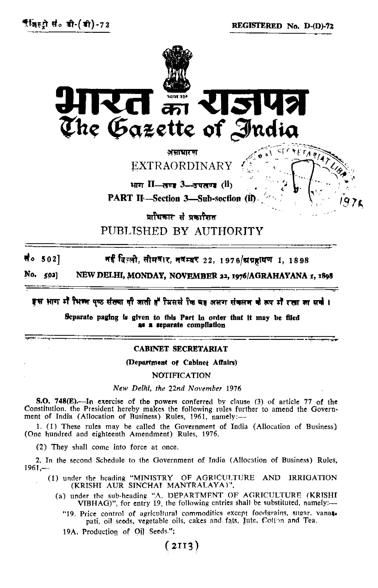
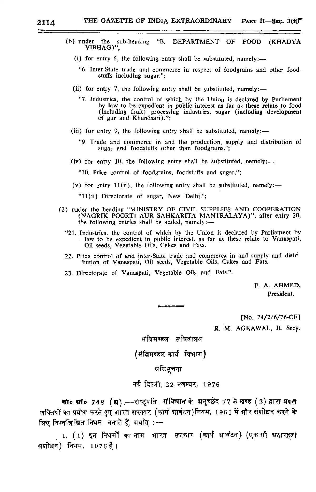
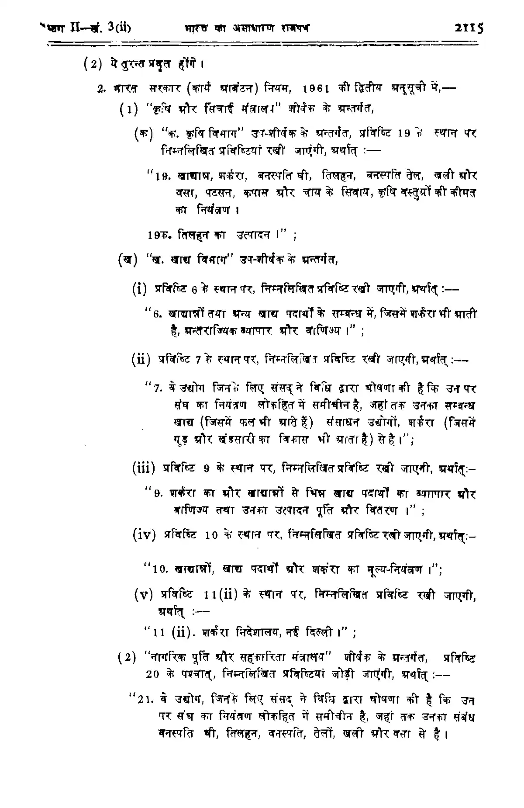
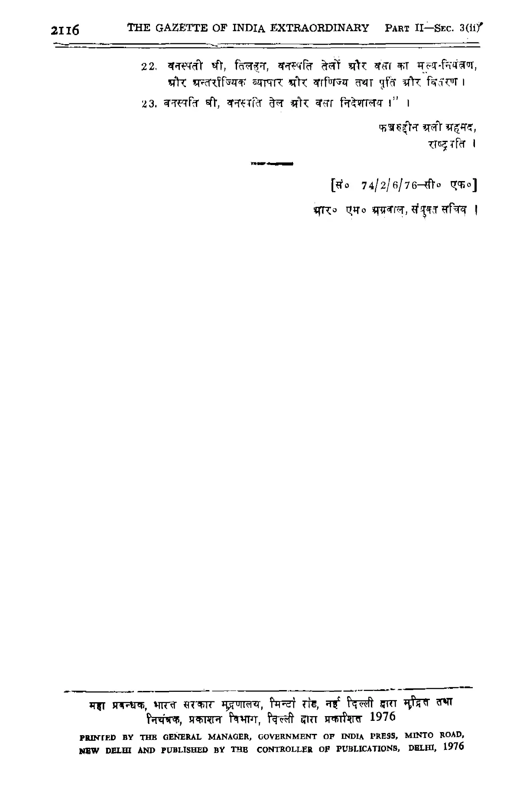

Amendment #118 (S.O. 748(E), 1976)
7 changes: 0 to the First Schedule, 7 to the Second Schedule. 7 applied
The order, page by page
Page 1 of 4

1Schedule 2 › MINISTRY OF AGRICULTURE AND IRRIGATION › DEPARTMENT OF AGRICULTURE › entry 19
- 19. Price control of agricultural commoditics except foodgrains, sugar. vanag pati, oil seeds, vegetable oils, cakes and fats Jute Cotton and Tea.
- 19A. Production of Oil Seeds.
applied at schedule 2 › ministry MINISTRY OF AGRICULTURE AND IRRIGATION › department A › part II › entry 19 in the Rules after #118
Page 2 of 4

234567Schedule 2 › MINISTRY OF AGRICULTURE AND IRRIGATION › DEPARTMENT OF FOOD › entry 6
- 6. Inter-State trade and commerce in respect of foodgrains and other foodstuffs including sugar.
applied at schedule 2 › ministry MINISTRY OF AGRICULTURE AND IRRIGATION › department B › group_heading I › entry 6 in the Rules after #118
Schedule 2 › MINISTRY OF AGRICULTURE AND IRRIGATION › DEPARTMENT OF FOOD › entry 7
- 7. Industrics, the control of which by the Union is declared by Parliament by law to be expedient in public interest as far as these relate to food (Including fruit ) processing industries, sugar (including development of gur and Khandsari) .
applied at schedule 2 › ministry MINISTRY OF AGRICULTURE AND IRRIGATION › department B › group_heading I › entry 7 in the Rules after #118
Schedule 2 › MINISTRY OF AGRICULTURE AND IRRIGATION › DEPARTMENT OF FOOD › entry 9
- 9. Trade and commerce in and the production, supply and distribution of sugar and foodstuffs other than foodgrains.
applied at schedule 2 › ministry MINISTRY OF AGRICULTURE AND IRRIGATION › department B › group_heading II › entry 9 in the Rules after #118
Schedule 2 › MINISTRY OF AGRICULTURE AND IRRIGATION › DEPARTMENT OF FOOD › entry 10
- 10. Price control of foodgrains, foodstuffs and sugar.
applied at schedule 2 › ministry MINISTRY OF AGRICULTURE AND IRRIGATION › department B › group_heading II › entry 10 in the Rules after #118
Schedule 2 › MINISTRY OF AGRICULTURE AND IRRIGATION › DEPARTMENT OF FOOD › entry 11 › item ii
- 11.
- ii. Directorate of sugar, New Delhi.
applied at schedule 2 › ministry MINISTRY OF AGRICULTURE AND IRRIGATION › department B › group_heading IV › entry 11 › item ii in the Rules after #118
after Schedule 2 › MINISTRY OF CIVIL SUPPLIES AND COOPERATION › entry 20
- 21. Industries, the control of which by the Union is declared by Parliament by law to be expedient in public interest, as far as these relate to Vanaspati Oil seeds, Vegetable Oils, Cakes and Fats.
- 22. Price control of and inter-State trade and commerce in and supply and distri bution of Vanaspati, Oil seeds, Vegetable Oils, Cakes and Fats.
- 23. Directorate of Vanaspati, Vegetable Oils and Fats.
applied at schedule 2 › ministry MINISTRY OF CIVIL SUPPLIES AND COOPERATION › group_heading III › entry 21 in the Rules after #118
Page 3 of 4

Page 4 of 4

How this document was read
From the Government of India (Allocation of Business) Rules, 1961 and their amendments, as published by the Cabinet Secretariat (cabsec.gov.in), read by orgpedia. The readings of the older scanned gazettes have known gaps.